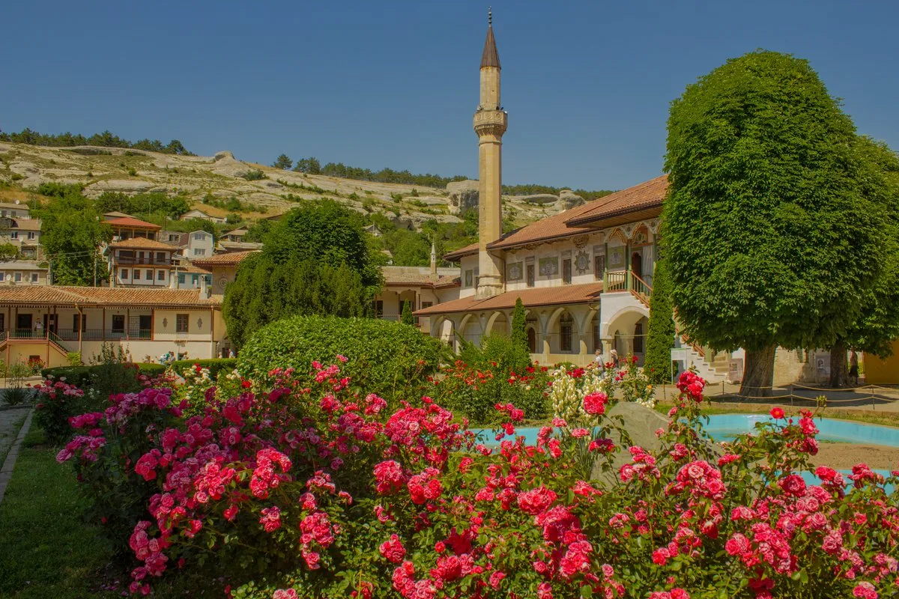
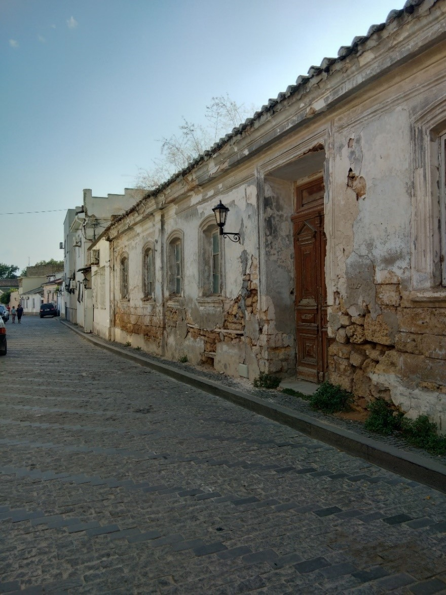
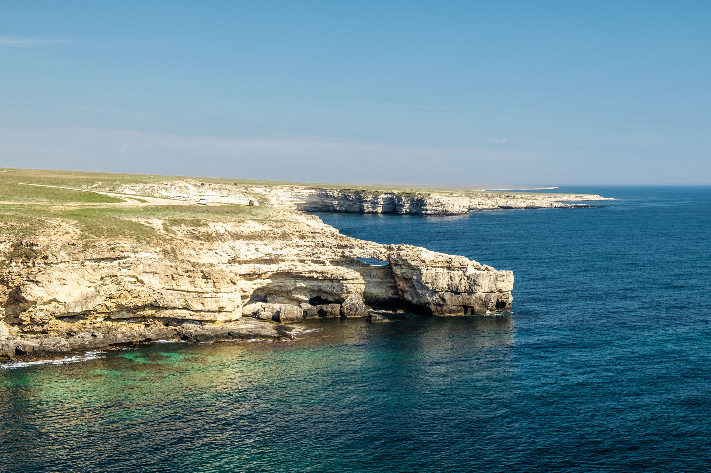
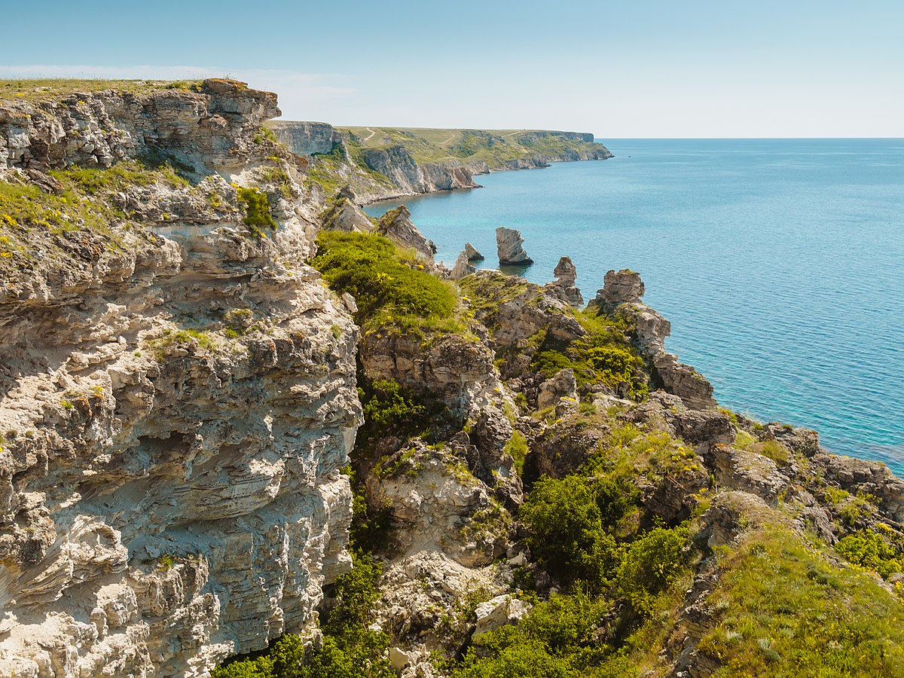

Бахчисарай
Бахчисарай-это одно из культурно- исторических мест Крыма. Он делится на две части, старый и новый город. Старая часть до сих пор сохранила колорит города средних веков. Его старые узенькие и кривые улочки, домики, которые стоят друг к другу очень близко, на них где-то сохранилась старая кладка и черепица. В старом городе сохранился Ханский дворец или как его еще называют Хансарай с которого началась история города и который является главной достопримечательностью Бахчисарая. Примечательно то, что он является единственным в мире образцом крымскотатарской дворцовой архитектуры. В нём можно посмотреть знаменитый Бахчисарайский фонтан или как его еще называют- фонтан слёз, мавзолей крымских ханов, конечно же сам дворец с его внутренним убранством и многое другое. Новый город современный, с развитыми жилыми микрорайонами и инфраструктурой. Окрестности Бахчисарая потрясают своей живописной красотой. Причудливые скалы, напоминающие разных животных и людей, просторные плато, с которых открываются великолепные виды. Среди этой красоты находится древний город Чуфут-Кале, Успенский пещерный монастырь и Георгиевская церковь.
Ханский дворец
Сайт: https://handvorec.ru/
Адрес: ул. Речная, дом 133.
Часы работы: ежедневно с 9.00 до 18.00
Стоимость: 250 руб., пенсионерам — 200 руб., учащиеся и дети от 16 до 18 — 100 руб. Экскурсия — 50 руб. Понедельник и вторник- выходные дни.
Как добраться?
GPS координаты: 44.754933, 33.848597
Где остановиться?
- Отели Бахчисарая
- Еще отели Бахчисарая
- Также можно снять квартиру
Старая Евпатория
В городе Евпатория существует старый город или как его еще называют малый Иерусалим. Он состоит в основном из обычных жилых строений, причем не самых богатых с точки зрения современных представлений о комфорте. Маленькие одноэтажные или двухэтажные домики, старая черепица на крыше, где-то даже сохранились резные ворота, такое ощущение, что ты переместился в прошлое на несколько столетий назад. Жилой комплекс находился в черте турецкой крепости Гезлёв, которая к сожалению не сохранилась до наших дней. Это было средневековое защитное сооружение с пятью воротами и невысокими, но крепкими стенами. На данный момент от крепости остались только одни ворота, и то они были реконструированы. Однако, в жилом комплексе сохранились исторические постройки принадлежащие разным конфессиям. Например, из религиозных достопримечательностей сохранились мечеть Джума-Джами, синагога Егие- Капай, караимские кенасы, собор святого Николая, Купеческая синагога. Также в старом городе осталась Турецкая баня дотированная 16 веком, а также в кафе Караман можно попробовать традиционную караимскую кухню.
Тарханкут
Самый экологически чистый и незастроенный регион полуострова, а также его самая западная точка. На мысе нет шикарных отелей, ресторанов и множества музеев. Сюда едут туристы, которые любят уединенный отдых, а также полюбоваться его пейзажами. Тарханкут- это степь, отвесные скалы, прозрачная морская вода и природа не тронутая человеком. Мыс Тарханкут является раем для дайверов. Здесь собираются сотни людей горящем этим видом спорта из разных регионов России и мира. Это потрясающее место для погружения с удивительным подводным миром, пещерами, гротами, с которыми связана масса легенд. Есть несколько затопленных кораблей, погружение к которым доставит массу впечатлений. Ближайшие населенные пункты, где вы сможете остановиться - Оленевка (расстояние до мыса - примерно 6 км), Черноморское (29 км), Окуневка (31 км) и Межводное (45 км).
Интересные факты
- Мыс Тарханкут – считается одним из наименее заселенных территорий Крыма.
- В урочище Атлеш снимали такие знаменитые советские фильмы, как «Человек-амфибия», «Пираты ХХ века», «Герои нашего времени».
- На Тарханкуте находится подводная «Аллея вождей», которую обожают дайверы. Первые скульптуры — бюсты Ленина, Маркса, Ворошилова — появились в 1992 году. Тогда это был первый подводный музей в мире. Аллея обновляется уже больше 25 лет дайверами. За это время территория подводного музея расширилась, здесь находятся больше 60 экспонатов. Подводный музей разделен на две зоны. В первой находятся бюсты советских вождей, во второй -композиторов и писателей: Горького, Маяковского, Есенина.
Что посмотреть?
Большой Атлеш. Здесь вы найдете небольшие бухточки, гроты и отвесные скалы высотой 64 метра. Это место примечательно огромной аркой, возникшей в результате воздействия волн и ветра.
Малый Атлеш. Визитная карточка этого места - сквозной тоннель, длина которого 98 метров.
Национальный парк «Тарханкутский». ». Открыт в 2009 году. Здесь встречается больше 70 видов животных и 20 видов насекомых, занесенных в Красную книгу. Площадь территории больше 10900 гектаров.
Грот «Чаша любви». Знаменитое место Тарханкута, напоминающее своей формой сердце. С этим местом связано поверье. Перед тем, как вступить в брак, влюбленные должны прыгнуть в грот, держась за руки. Если руки не разомкнут, значит семейная жизнь будет долгой и счастливой. Однако, это место популярно из-за того, что на глубине около 3 метров находится тоннель, ведущий в море в нём снимали один из эпизодов советского фильма «Человек-амфибия».
Как добраться?
Лучше всего сюда попасть на личном автомобиле. Расстояние до мыса Тарханкут от Симферополя – 170 километров. Также из Симферополя можно добраться автобусом до Евпатории, либо Черноморского, откуда около 30 километров нужно преодолеть на местной маршрутке до Оленевки. Из Евпатории до Оленевки также пару раз на день ездит автобус. Приблизительная стоимость билета – 276 рублей. Так как мыс Тарханкут- это береговая линия, то точных координат там нет, однако можно ориентироваться по некоторым из ниже предложенных:
GPS координаты: 45.347088, 32.494289
GPS координаты: 45.344470, 32.500977
GPS координаты: 45.377502, 32.531895
Где остановиться?
Джангуль
Джангуль- это сказочное место с потрясающими видами и природой, которая завораживает своей красотой. Прибрежная полоса растянулась на 5 км вдоль береговой линии между поселками Черноморское и Оленевка, неподалеку от Караджинской бухты. На самом верху урочища распростерлась степь, а за ней – резкий обрыв. Тут же можно увидеть различные фигуры из известняка, высокие балки. Во флоре степных участков преобладают дикие травы (чабрец, ковыль, полынь) и кустарники (терновник, жасмин, ежевика, шиповник).
Прежде всего это место где можно уединиться с природой и просо отдохнуть душой и телом, или же погулять и пофотографировать скалы и природу Джангуля. Среди достопримечательностей Джангуля выделяют множество карстовых пещер и гротов в рельефе прибрежной полосы. Пещеры, получившие собственные названия, представляют интерес для дайверов:
- Бурун-Коба – полузатопленная, небезопасная при неспокойном море, карстовая полость длиной 17 м, высотой до 2,5 м, глубиной до 40 м.
- Громыхало – в недрах этого образования в шторм образуются громкие звуки.
- Южная – расположенное на юге бухты Пещерной углубление длиной 12 м, шириной 2 м, высотой до 5,5 м.
Как добраться?
Добраться до урочища Джангуль в Крыму не так сложно. Основной ориентир- это поселок Оленевка. Существует несколько способов добраться до поселка, на автобусе из Евпатории, Симферополя или Черноморского, либо на такси или машине. От Оленевки до Джангуля несколько километров, добраться можно несколькими способами:
- Взять напрокат велосипед или скутер в Оленевке. Пожалуй это самый интересный способ путешествия по урочищу Джангуль. Вы сможете быстро обогнуть весь заповедник, но при этом вдоволь насладитесь красотами данного места.
- Пройти пешком от Оленевки, наслаждаясь красотами степного Крыма.
- Доехать на такси. Стоимость поездки относительно недорогая.
- Поплыть на катере или лодке, до заказника Джангуль в летнее время с поселка постоянно курсируют катера.
- Поехать на личном транспорте, в таком случае важно помнить, что близко к обрывам подъезжать нельзя.